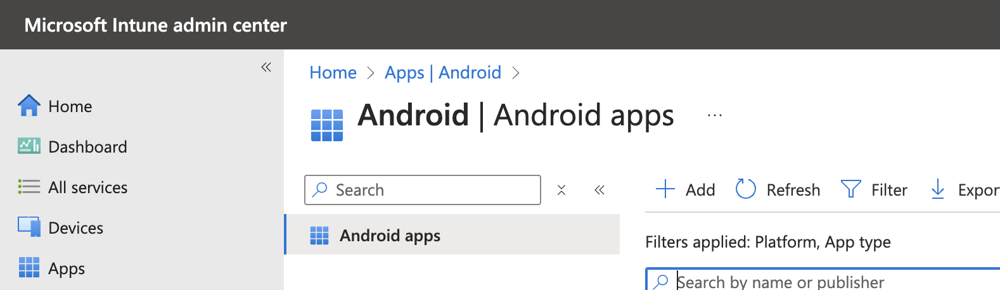
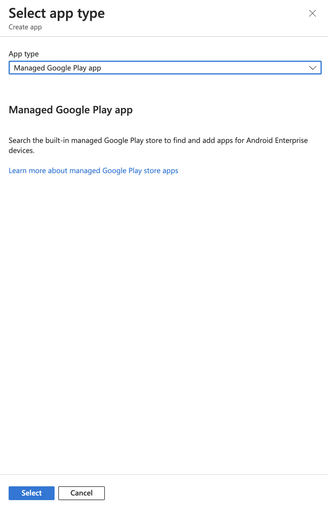
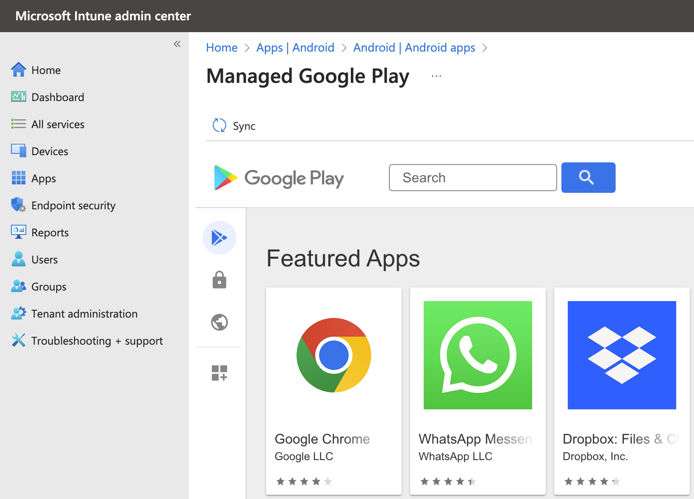
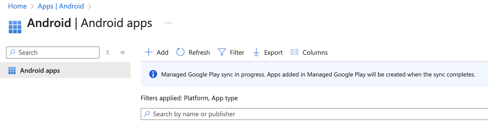
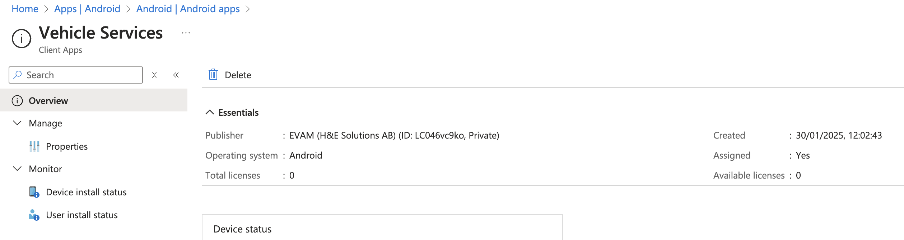
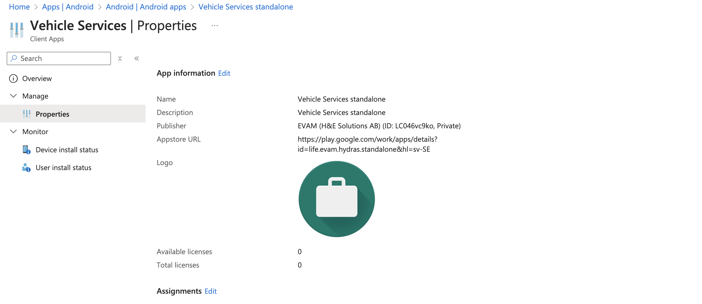
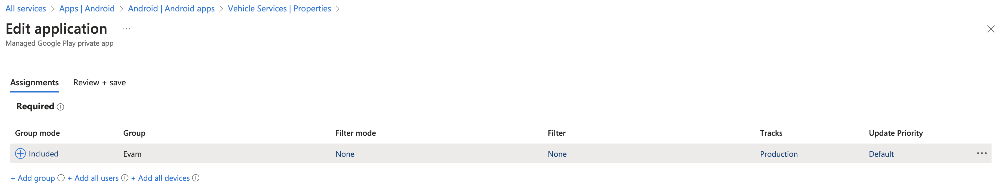
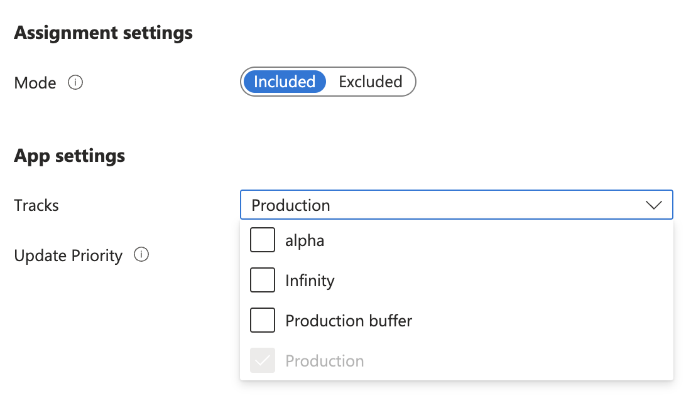
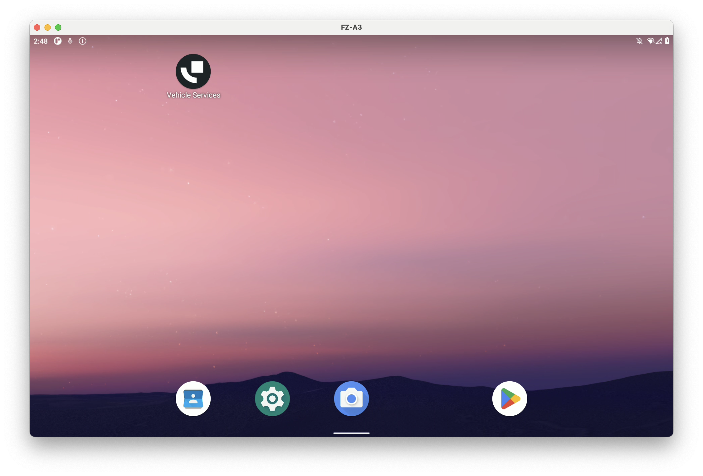

Self Service: Setup Vehicle Services for your organization¶
This article describes the process to deploy Vehicle Services to your fleet of self-managed devices and is relevant to you if you have purchased Vehicle Services as an APK.
Pre-requisites for each device:
The device should run Android 11 or later version,
The device should be enrolled in your organization through an Android Enterprise compatible Mobile Device Management (MDM) system - such as Microsoft Intune.
Attention
Deploying to devices without Android Enterprise - such as devices running Android Open Source Project (AOSP) or devices without Google Mobile Services (GMS) - is not currently available but will be in an upcoming release. Reach out to us at support@evam.life if you are interested in this deployment scenario.
Deployment steps using Microsoft Intune¶
The following steps assume you are using Microsoft Intune.
Pre-requisites:
You must have linked your Managed Google Play organization to Intune,
You must have Administrator access.
Step 1 - Setup device certificates for your Android devices¶
Authentication towards Central Services, Evam cloud services, requires the self-managed devices to supply a trusted client certificate.
This is a standard client certificate, and can be issued using different strategies based on your organization needs (SCEP, PKCS, etc). The Certificate Authority (CA) public certificate is then to be provided to Evam to allow your devices to connect safely.
This section does not aim at being a comprehensive guide on this subject, and focuses instead on the Evam-specific requirements.
There are 2 main options available:
Setup your own SCEP server and connect it to your Intune tenant to issue device certificates automatically,
Create device certificates using
openssland install them manually in your devices.
Option 1 - Setup your own SCEP server¶
This option consists in setting up a SCEP server and connecting it to your Intune tenant. Devices enrolled through this configuration will automatically obtain a certificate upon enrollment, and the Intune Android app will keep those certificates up-to-date. No action is required from the user to enable this.
This option offers the best scalability, but requires a more advanced setup in Intune.
You can find the documentation to achieve this in the Intune documentation.
Some third-party services offer to simplify this: Intune documentation. We recommend SCEPMan if you decide on this option.
Once you are done with setting up this server, please send the created CA certificate - without the private key! - to support@evam.life with the subject “Add CA certificate to Central Services”.
The file should look like this:
-----BEGIN CERTIFICATE-----
MII (...) (content will vary)
-----END CERTIFICATE-----
Make sure you send this mail using your professional mail address.
Option 2 - Create device certificates and install them manually¶
This option requires no setup in Intune. The only requirement is to install openssl on a computer.
It however requires the device certificates to be installed manually on each device.
Due to the security-sensitive nature of the client certificates, we recommend restricting access to this computer and only using it for the certificate creation operations.
These instructions will work on Windows, MacOS and GNU/Linux. They require familiarity with the command line and the OpenSSL program.
Install
opensslfor your Operating System. On Windows we recommend you use Git Bash,Open the Terminal app (MacOS and Linux) or Git Bash (Windows),
Create a directory for the certificates, we will name it “cacerts”
mkdir -p cacert
Enter this directory
cd cacert
Create the directory for the CA private key
mkdir -p ca/private
Create the CA keys. You will be prompted for a password to protect the private key file. It is important you use a complex password and store it in a safe location.
openssl req -x509 -days 3650 -newkey rsa:4096 -keyout ca/private/ca_key.pem -out ca/ca_cert.pem
After entering the password, you will be prompted for details about your organization. Please fill them accordingly. Here is an example below.
-----
You are about to be asked to enter information that will be incorporated
into your certificate request.
What you are about to enter is what is called a Distinguished Name or a DN.
There are quite a few fields but you can leave some blank
For some fields there will be a default value,
If you enter '.', the field will be left blank.
-----
Country Name (2 letter code) []:SE
State or Province Name (full name) []:Stockholm
Locality Name (eg, city) []:Stockholm
Organization Name (eg, company) []:Evam
Organizational Unit Name (eg, section) []:Evam
Common Name (eg, fully qualified host name) []:evam.life
Email Address []:info@evam.life
Create the directory for the client certificate
mkdir -p client/private
Create the client key and Certificate Signing Request (CSR). You will be asked again for details about your organization, make sure to fill them in accordingly.
openssl req -new -key client/private/client_key.pem -out client/client.csr
Create the client certificate.
openssl x509 -req -days 1460 -in client/client.csr -CA ca/ca_cert.pem -CAkey ca/private/ca_key.pem -CAcreateserial -out client/client_cert.pem
The client certificate is now ready. We only need to export it in the P12 format so Android can use it.
openssl pkcs12 -export -out client-certificate-evam.p12 -inkey client/private/client_key.pem -in client/client_cert.pem
You will be prompted for a password. Again, make sure to use a secure password. You will have to enter it in the Android devices.
The certificate file of interest is named “client-certificate-evam.p12”, you may copy it on a USB stick now.
Send the file “ca_cert.pem” under the “ca” directory to support@evam.life with the subject “Add CA certificate to Central Services”. Make sure you send this mail using your professional mail address.
On the device side¶
Start by inserting the USB stick in the Android device.
Open the “Settings” app
Navigate to “Security”
Then “Encryption and credentials”
Then “Install from storage”
Then “VPN & app user certificate”
A file explorer should open, navigate to your USB stick
Click on the file “client-certificate-evam.p12”,
Enter the password you used at step 10 of the previous section,
Optionally, provide a name for this certificate, such as “Evam”.
The certificate is now installed on this device. It will be valid for 4 years, after that time you will need to repeat the process.
Step 2 - Obtain access to the Vehicle Services App¶
To obtain the Vehicle Services App in Intune, you should send a mail to support@evam.life with the subject “Vehicle Services App access request”. Make sure you send this mail using your professional mail address. In the mail, you should include your Oganization ID so we can share the app with your Managed Play store instacne, see this guide if you do not know how to retrieve it.
You will then receive a confirmation as response to this mail.
Step 3 - Add the App through Intune¶
Start by accessing the Intune Admin Center.
Then navigate to your Android apps by clicking through:
“Apps”
“By platform” > “Android”

Let us now add Vehicle Services as new application. Click on the “+ Add” button as you can see in the image above, then select under “App type”: “Store app” > “Managed Google Play app”.

Then, click on the “Select” button as shown in the image above.
This will bring you to the Managed Play Store view.

You can then click the “Sync” button right above “Google Play” as visible in the image above.
This will bring you back to the Android apps list in Intune, with an indicate the sync is ongoing. This means Intune is now pulling your new app from the private play store.

You should wait a minute and then click the “Refresh”. You new app should show in the list. Clicking on it will display its details.

Step 4 - Assign the Application to devices¶
Click on “Properties” in the left menu as shown on the image above.

Click on the “Edit” button next to “Assignments” as shown in the image above.
This will open a page in which you can decide which devices, users, or groups should get access to the application.
You may decide based on your organisational structure which devices or groups should receive the application. We recommend you take advantage of Security groups in Intune to group devices logically as it offers a great deal of flexibility.

In the example above, all devices that are part of the “Evam” group will have Vehicle Services as pre-installed application, with no possibility of removing it. The “Evam” group is a security group in which devices are manually enrolled.
Note the “Tracks” column, click on it.

In this blade, you may decide what update tracks should be delivered to the devices. Vehicle Services offers different tracks:
Production: This is the default track and contains the stable releases of Vehicle Services. Those release are rigorously tested before deployment.
Alpha: This is preview track for newer Vehicle Services versions. It typically contains newer features or APIs, and is well-suited for Certified Application development and testing. This track is not recommended for production deployments where mission-critical robustness is expected.
The 2 other tracks (“Infinity” and “Production buffer”) are not recommended for any usage.
You may then click on “Review + save”, which will deploy the Vehicle Services application to the desired devices.
On the device side¶
The application will be downloaded to the devices and appear in the Android launcher.

You may launch it by clicking its icon.
When Vehicle Services starts for the first time, you will be requested to select a certificate to be used for Central Services. Make sure you use the certificate installed at Step 1, or you will not be able to login.
Step 5 - Update the Vehicle Services APK¶
The Evam platform - which includes Vehicle Services - is continuously updated to add new features, more stability and security.
You can find the Vehicle Services version history and release notes here:
You do not have to update every time a new release is made, instead we recommend you update Vehicle Services on a regular basis at a pace that matches your operational constraints (maintenance, etc).
To update Vehicle Services, no action is required in Intune.